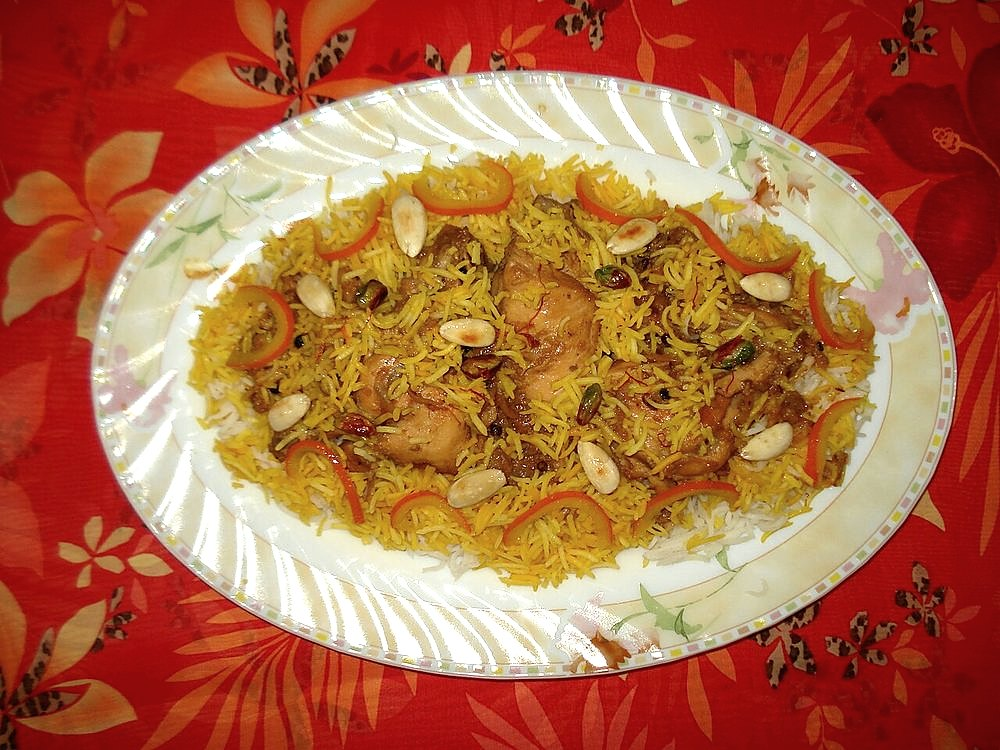

Contains: milk, tree nuts
Ingredients
Quantities for 6.
- 400g, soaked 30 minutes Basmati Rice
- 300g Sugar
- 80g Ghee
- a generous pinch, soaked in warm milk Saffronzarda means yellow; this is where it comes from
- 6 pods Cardamom
- 4 Cloves
- 40g Cashew
- 40g, slivered Almonds
- 40g Raisins
- 80g, crumbled Khoyaoptional
- 700ml Water
Cookware
stovetop
Checked against the ingredient list for ten allergens: milk, egg, fish, crustaceans, tree nuts, peanuts, sesame, mustard, soy and gluten. Brands vary, so read the label on anything new to you.
Before you start
- The rice is boiled first and only then met with sugar. Sugar added to raw rice stops it softening.
- It should be dry and separate, not sticky. Zarda is a pulao, not a kheer.
Method
- Boil the soaked rice in plenty of water with the cardamom and cloves until 80 per cent done. Drain well.
- Fry the nuts and raisins in the ghee until golden and lift out.
- Add the drained rice to the ghee with the saffron milk and fold gently.
- Scatter the sugar over the top, cover tightly and cook on the lowest heat 12 minutes.The sugar melts down through the rice. Do not stir it in or you will break the grains.
- Fold in the fried nuts, raisins and khoya with a fork.
- Rest 10 minutes covered before serving.
Storage
Keeps 2 days refrigerated. Cool quickly and refrigerate within two hours as with any cooked rice. Steam to reheat.
Nutrition Medium estimate
Medium protein: 11 g a serving, 6% of the calories
| Per serving163 g | Per 100 g | |
|---|---|---|
| Calories | 715 kcal | 438 kcal |
| Protein | 11.1 g | 7 g |
| Carbohydrate | 117.2 g | 72 g |
| of which sugars | 60.2 g | 37 g |
| Fibre | 2.1 g | 1 g |
| Fat | 23.5 g | 14 g |
| of which saturated | 11.4 g | 7 g |
| of which unsaturated | 10.7 g | 7 g |
Ingredients given to taste count as zero, so the real figures run a little higher. Estimated from raw ingredients using USDA FoodData Central.
More like this: Vegetarian Indian recipes · Gluten-free Indian recipes · Awadhi/Lucknowi recipes
Times, yields, allergens and nutrition are guidance. Use your own judgement on doneness and on storing. More in About.